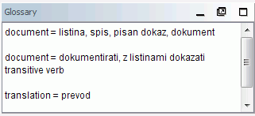

|
|
|
|
Sie werden die Dialoge unten verwenden, um OmegaT und Projekteinstellungen zu ändern. Alle werden in eigenen Kapiteln beschrieben, unten wird nur zusammengefasst, wofür man sie verwendet und wie man sie aufruft:
|
|
|
|
|
|
|
|
|
|
Das Hauptfenster besteht aus drei Fenstern, dem Hauptmenü und einer Statusleiste. Sie können die Position jedes Unterfensters ändern oder es sogar als getrennten Fenster abkoppeln, wenn Sie es anhand des Namens bewegen. Je nach Status, können in der oberen rechten Ecke verschiedene Zeichen erscheinen:
 verkleinert das Unterfenster zur Zeile mit seinem Namen unten nahe der Statuszeile.
verkleinert das Unterfenster zur Zeile mit seinem Namen unten nahe der Statuszeile.
 vergrößert das Unterfenster auf die vorhandene Fensterfläche
vergrößert das Unterfenster auf die vorhandene Fensterfläche
 setzt das Unterfenster an die Stelle, wo es vor Minimieren bzw. Maximieren war.
setzt das Unterfenster an die Stelle, wo es vor Minimieren bzw. Maximieren war.
 löst das Unterfenster vom Hauptfenster ab und zeigt es getrennt an.
löst das Unterfenster vom Hauptfenster ab und zeigt es getrennt an.
 fügt das Unterfenster dem Hauptfenster hinzu.
fügt das Unterfenster dem Hauptfenster hinzu.
Es ist auch möglich, die Unterfenster überlappend zu positionieren. In diesem Fall werden die Unterfenster einen Reiter oben anzeigen. Das Klicken auf den Reiter stellt das Fenster in den Vordergrund. Um die Fenstergrößen anzupassen, kann man die Trennlinien zwischen den Unterfenstern ziehen.
Hier werden Sie die Übersetzung eintippen und bearbeiten. Das Editier-Fenster zeigt den Text des teilweise übersetzten Dokumentes: der bereits übersetzte Text wird als übersetzt angezeigt, und der noch nicht übersetzte Text wird in der ursprünglichen Sprache gezeigt. Der gezeigte Text wird in Segmente gespalten, und Sie können durch das Dokument scrollen und dabei auf ein beliebiges Segment doppelklicken, um es zu bearbeiten. In obigen gezeigten Fall sind die schon übersetzte Segmente gelb gekennzeichnet - sie können aber die Einstellung jederzeit unter Ansicht ändern).
Eines der Segmente ist das aktive Segment. Es ist das einzige, das in zwei Teilen dargestellt wird: der obere Teil in der ursprünglichen Sprache in Fettschrift mit einem grünen Hintergrund, der untere Teil ist das Editier-Feld, eingegrenzt von zwei Markierungen: die ganz linke Markierung ist <Segment nnnn> wobei nnnn eine Nummer des Segments im Projekt ist, die ganz rechte Markierung ist <Segmentende>. Der Teil oben dient als die Referenz und Sie überschreiben oder modifizieren den Inhalt des Editier-Felds mit Ihrer Übersetzung.
Abhängig vom Editierverhalten kann das Feld für das unübersetzte Segment entweder leer sein, oder den Quelltext beinhalten, oder die Zeichenfolge enthalte, die dem zu übersetzenden Text am ähnlichsten ist. Wenn Sie zu einem anderen Segment gehen, wird die Übersetzung bestätigt und gespeichert. Wenn Sie wollen, dass das Segment unübersetzt bleibt, leeren Sie das Zielfeld von Text (wählen Sie dazu alles mit STRG+A und löschen Sie dann den Inhalt mit Del). OmegaT kann sich an Übersetzung erinnern, die mit der Quelle identisch ist.. Das ist nützlich, wenn es um Dokumente geht, die nicht zu übersetzende Warenzeichen, Namen oder andere Eigennamen bzw. Teile davon in einer dritten Sprache enthalten.
Siehe Bearbeiten der Übersetzung für weitere Einzelheiten.
Das Treffer-Fenster zeigt die wahrscheinlichsten Segmente in den TMs, sowohl im Translation Memory des Projektes der Übersetzung, als auch in hinterlegten TMs, die aus früheren Projekten importiert wurden oder die Sie von Kunden oder der Übersetzungsagentur erhalten haben.
Wenn Sie sich zum folgenden Segment bewegen, wird der erste unscharfe Treffer (derjenige mit dem höchsten Prozentsatz an Übereinstimmung) automatisch ausgewählt. Man kann einen anderen Treffer wählen und zwar durch STRG+2, 3, 4, oder 5.. Selbstverständlich wird das Drücken von Ctrl+5 nichts bewirken, wenn es keinen Treffer #5 gibt.
Um den ausgewählten Treffer in Ihre Übersetzung einzufügen, benutzen Sie STRG+R um das Zielfeld zu ersetzen oder STRG+I, um die Übersetzung an der Stelle des Kursors einzufügen.
Der für die Treffer angegebene Prozentsatz entspricht ungefähr der Zahl der gleichen Wörtern im Quellsegment und dem entsprechenden TM-Segment, geteilt durch die Zahl von Wörtern im längeren der zwei Segmente. Der ausgewählte Treffer wird fett hervorgehoben, Wörter, die im zu übersetzenden Segment nicht vorkommen, werden blau und Wörter, die sich an fehlende Teile anschließen, werden grün gefärbt. Im Beispiel oben ist das Quellsegment Information about Java & OmegaT. Der beste Treffer ist 75%, da 3 von 4 Wörtern (wobei & ignoriert wird) übereinstimmen. Die Zeile mit dem Treffer-Prozentsatz beinhaltet auch die Quell-TMX, wo der Treffer gefunden wurde. Wird keine Dateiname angezeigt, handelt es sich um die Standard Projekt-TM. Verwaiste Segmente (der Treffer #4) bedeuten Segmente in der Projekt-TM, die kein entsprechendes Quell-Segment haben.
Glossar-Fenster zeigt die in den Glossardateien gefundenen Übersetzungen der Terminologie. Es zeigt die Übersetzung von Ausdrücken, die im gegenwärtigen Segment gefunden wurden, es zeigt sie aber nur als Referent und bietet nicht die Möglichkeit, den Ausdruck einzufügen oder durch seine Übersetzung zu ersetzen.

Der Quell-Segment im Beispiel oben war “In den meisten Übersetzungsjobs wird es als wichtig erachtet, dass das übersetzte Dokument ähnlich wie das Original aussieht.”, und zwei Wörter davon, document und translation, wurden in der Glossardatei gefunden. OmegaT unterstützt auch Begriffe aus mehreren Wörtern, aber nur in einer sehr einfachen Form: wenn beide Wörter eines Begriffs im gegenwärtigen Segment gefunden werden, wird der Begriff angezeigt.
Offensichtlich können Sie das Hauptmenü benutzen, um auf alle OmegaT Funktionen zuzugreifen. Siehe Kapitel Hauptmenü für die vollständige Beschreibung der Menüfunktionen. Die meist genutzten Funktionen sind mit Tastenkombinationen erreichbar, so dass - hat man sie einmal kennen gelernt - beim Übersetzen nicht mehr durch das Hauptmenü geklickt werden muss.
Die Status-Leiste an der Unterseite vom Hauptfenster zeigt Meldungen, die sich auf den Arbeitsfluss beziehen. Mit dieser Leiste wird der Benutzer über spezifische Operationen, die im Gange sind, informiert. Sie zeigt auch die Anzahl der unscharfen Treffer und Treffer im Glossar für das gegenwärtige Segment.
Im Projektdateifenster werden die Projektdateien und weitere Projektinformationen aufgelistet. Es wird automatisch angezeigt, wenn OmegaT das Projekt lädt. Mit esc wird das Fenster geschlossen; um es zu öffnen oder in den Vordergrund zu bringen, benutzt man STRG+L.
Die folgende Information wird angezeigt.
die Liste aller übersetzbaren Dateien im Projekt. Es sind die in der Source Verzeichnis befindliche Dateien, die OmegaT verarbeiten kann. Wird auf irgendeine der Dateien geklickt, wird der Inhalt zum Übersetzen angezeigt.
Die aktuell im Editierfenster verfügbare Datei wird blau hervorgehoben.
die Anzahl von Segmenten in jeder Datei wird neben dem Dateinamen angezeigt.
die Zahl von einzigartigen Segmenten im ganzen Projekt.
die Zahl von einzigartigen Segmenten, die bereits übersetzt wurden. Jedes mal, wenn ein neues Segment übersetzt wird, wird sie aktualisiert.
Die Menge der einzigartigen Segmenten wird geschätzt anhand der Zahl aller Segmente und der Zahl doppelter Segmente bis auf Buchstabenebene ("Laufen", und "laufen" z.B. werden als unterschiedlich genommen).
Der Unterschied zwischen der "Zahl von Segmenten" und der "Zahl von einzigartigen Segmenten" gibt Ihnen einen ersten Richtwert von der Zahl von Wiederholungen im Text. Die Zahlen sagen jedoch nichts darüber aus, wie relevant die Wiederholungen sind: es könnten relativ lange Sätze sein, die mehrfach wiederholt werden (Glück gehabt!) oder es könnte eine Tabelle mit Stichworten sein (weniger Glück...) Die project_stats.txt Datei im Verzeichnis /omegat Ihres Projekts enthält detailliertere Informationen zu Segmenten pro Datei.
Es ist möglich, die Zahl von Segmenten/ einzigartigen Segmenten zu ändern, wenn man die Segmentierungsregel ändert. Das sollte nach Beginn des Übersetzens im Projekt allerdings unbedingt vermieden werden. Siehe Segmentierungsregel für mehr Informationen.
Sie können Quelldateien zum Projekt hinzufügen, indem Sie auf den Schaltfläche "Quelldateien importieren..." klicken. Die ausgewählten Dateien werden in das /source Verzeichnis kopiert und das Projekt wird erneut gestartet, um die neuen Dateien zu laden. Sie können auch Quelldateien von Internetseiten hinzufügen, die in MediaWiki geschrieben sind, wenn Sie auf die Schaltfläche "Aus MediaWiki importieren" klicken und die entsprechende URL-Adresse eingeben.
Sie werden Suchfenster verwenden, um spezifische Segmente im Projekt zu finden. Es können mehrere Suchfenster gleichzeitig offen sein. Benutzen Sie STRG+F, im Hauptfenster, um einen neues Suchfenster zu öffnen Das Suchfenster besteht aus einem Textfeld für Begriffe oder Stichwörter, Auswahlboxen und Optionsfelder, um die Suche zu erstellen und aus einem Feld zur Anzeige der Ergebnisse der Suche.
Es wird sowohl im Quelltext als auch in der Übersetzung gesucht. Sie können auch in beliebigen Ordnern suchen, vergessen Sie aber dabei nicht, dass OmegaT nur in den unterstützten Dateiensuchen kann.
Die Suche unterstützt die Jokerzeichen * and ? und auch reguläre Ausdrücke.
Wenn Sie nach Eingabe einer Zeichenfolge auf die Schaltfläche Suchen drücken, werden alle Segmente im Projekt, die der gesuchten Zeichenfolge entsprechen, aufgelistet. Da OmegaT alle identischen Segmente als eine Einheit behandelt, wird nur das erste einzigartige Segment angezeigt. Die Segmente werden in der Reihenfolge ihrer Erscheinung innerhalb des Projektes angezeigt. Übersetzte Segmente werden mit dem ursprünglichen Text oben und dem übersetzten Text unten gezeigt, bei den noch nicht übersetzten Segmenten wird nur der ursprüngliche Text gezeigt.
Sie können auf ein beliebiges Segment klicken, um ihn im Editor zur Modifizierung zu öffnen. Danach kann man in das Suchfenster zurückschalten und zum nächsten gefundenen Segment gehen, um es zu modifizieren. Solch eine Methode ist zum Aktualisieren der Terminologie nützlich.
Das Fenster der Tags-Prüfung entdeckt Tag-Fehler in der Übersetzung und listet sie auf. Benutzen Sie STRG+T, um das Fenster zu öffnen. Das Fenster beinhaltet eine Tabelle mit 3 Spalten, dem Link zum Originalsegment, seinem Quell- und seinem Ziel-Text.

Die Tags werden für den leichten Vergleich zwischen dem Original und dem übersetzten Inhalt in fettem Blau hervorgehoben. Klicken Sie auf den Link, um zum Segment im Editier-Fenster zu springen. Korrigieren Sie den Fehler notfalls und drücken Sie STRG+T, um zum Fenster der Tag-Prüfung zurückzukehren und weitere Fehler zu korrigieren. Im ersten und im dritten Fall sind die Tags falsch gepaart und in dem zweiten Fall fehlt beim Anfangs-Tag das Zeichen < .
Tag Fehler entstehen bei Tag Änderungen in der Übersetzung, wodurch die Reihenfolge und Zahl der Tags nicht mehr dem Original entsprechen. Manche Tag-Änderungen sind notwendig und auch gutartig, einige werden aber bei der Erstellung der Zieldokumente Probleme verursachen. Tags stehen allgemein für eine Art Formatierung im ursprünglichen Text. Wenn Sie die Formatierung der Originaltexte vereinfachen können, werden Sie die Anzahl der Tags weitgehend reduzieren können.
Der Hilfe-Browser (mit dem auch dieses Handbuch gezeigt wird) kann man mit F1 oder mit Hilfe → Benutzerhandbuch... im Hauptmenü aufgerufen werden.
Im Fenster werden Sie das Handbuch und zwei Schaltflächen sehen: Zurück und Inhalt. Das Benutzerhandbuch ist ein HTML-Dokument mit Links zu verschiedenen Kapiteln. Ein Klick auf einen Link, so wie in einem Internet Browser, öffnet die gewünschte Seite.
Die Benutzerhandbücher befinden sich im doc Unterordner des OmegaT Installationsordners; so können Sie sich zum Beispiel die englische Dokumentation ansehen, indem Sie die Datei doc/de/index.html in Ihrem Browser öffnen. Auf diese Weise kann man auch die vom eingebauten Browser nicht zu akzeptierten Links zu externen Seiten verfolgen.
| Rechtliche Hinweise | Home | Index des Inhalts |